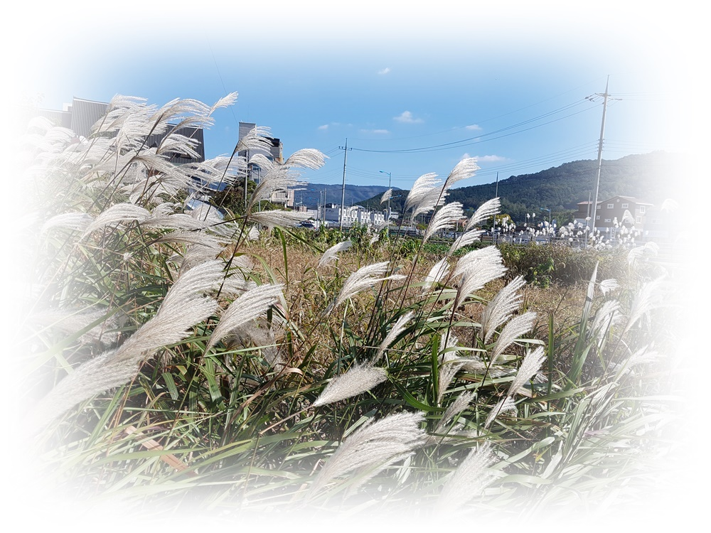

1. 중년기 수면 변화와 회복의 신호
중년기의 잠은 이전 시기와 다른 방식으로 흔들린다. 예전과 같은 생활을 유지하고 있음에도 잠이 얕아지고, 자주 깨며, 아침의 회복감이 줄어드는 경험은 많은 중년기 성인이 공통적으로 호소하는 변화이다. 이러한 수면 변화는 흔히 ‘나이 들어서 생기는 자연스러운 현상’으로 치부되거나, 반대로 개인의 건강 관리 실패로 오해되기 쉽다.
그러나 발달심리학적 관점에서 중년기의 잠은 단순한 생리적 변화가 아니라, 오랜 시간 누적된 역할 부담과 정서적 피로가 몸을 통해 표현되는 발달적 신호로 이해할 필요가 있다.
이 글은 브런치북(https://brunch.co.kr/@205593d149c84b6/3) 『감정도 잠이 필요하다』 2부 4장 〈청년기: 선택과 책임이 잠을 흔드는 밤〉에 포함된 글로, 청년기의 수면을 자기관리와 회복 능력이 시험받는 발달적 지점으로 다룬다. 잠을 미루는 선택 뒤에 놓인 심리적 부담과 삶의 구조를 발달심리학적으로 해석한다.

2. 중년기의 발달 과제와 수면의 전환
Erik Erikson은 중년기를 생산성 대 침체의 단계로 설명하며, 이 시기를 타인과 사회에 기여하려는 욕구와 자기 소진 사이의 긴장이 공존하는 시기로 보았다. 양육, 직업적 책임, 가족 돌봄, 사회적 역할은 중년기 삶의 중심을 이루며, 이러한 책임은 낮 동안에는 기능적으로 수행되지만 밤이 되면 몸의 피로와 함께 드러난다. 중년기의 잠은 더 이상 단순한 휴식이 아니라, 삶의 과부하가 처음으로 명확하게 신체화되는 공간이라 할 수 있다.
3. 신체 변화와 수면 구조의 변화
중년기에 접어들면서 호르몬 변화, 기초 대사율 저하, 수면 구조의 변화가 동시에 나타난다. 깊은 수면 단계가 감소하고, 각성에 대한 민감도가 높아지면서 작은 자극에도 잠이 쉽게 깨어난다. 이러한 변화는 병리적 문제라기보다 생애 주기상 자연스러운 전환에 가깝다. 그러나 신체 변화에 대한 이해 없이 이전과 같은 수면을 기대할 경우, 수면에 대한 불안과 좌절감이 오히려 각성을 강화하는 요인으로 작용할 수 있다.
4. 누적된 스트레스와 밤의 각성
중년기의 밤에는 현재의 피로뿐 아니라, 해결되지 않은 과거의 경험과 미래에 대한 걱정이 함께 머문다. 직업적 성취에 대한 재평가, 부모 세대의 노화, 자녀의 성장과 독립은 중년기 성인에게 복합적인 정서 반응을 유발한다. 잠들기 전 떠오르는 생각의 증가는 인지적 문제라기보다, 삶의 여러 층위가 동시에 재조정되고 있음을 보여주는 신호이다. 이 시기의 각성은 불면의 원인이라기보다, 삶의 방향을 재점검하라는 심리적 요청으로 해석될 수 있다.
5. 교육·상담 장면에서의 회복 중심 접근
중년기의 수면 개입에서 중요한 것은 ‘예전처럼 자게 하는 것’이 아니라, 변화된 몸과 삶의 리듬을 재조율하도록 돕는 것이다. 교육 및 상담 장면에서는 수면 문제를 교정의 대상으로만 다루기보다, 회복이 가능한 생활 구조를 함께 모색하는 접근이 필요하다. 역할을 줄이거나 속도를 늦추는 선택은 후퇴가 아니라, 중년기 발달 과제에 부합하는 적응 전략이다. 잠은 이 시기에 자기 돌봄의 핵심 지표로 기능하며, 회복을 허락할 때 비로소 안정될 수 있다.
결론
중년기의 잠은 마음보다 몸이 먼저 변화를 알리는 시간이다. 얕아진 잠과 잦은 각성은 고장이 난 신호가 아니라, 오랜 시간 지속된 삶의 방식이 재조정을 요구하고 있음을 알려주는 발달적 메시지이다. 중년기의 수면을 문제로만 해석할 경우, 우리는 회복의 기회를 놓치게 된다. 반대로 잠을 생애 발달의 관점에서 이해할 때, 중년기의 밤은 삶의 속도를 조절하고 방향을 재정렬하는 중요한 전환점이 된다. 잘 자는 중년은 이전으로 돌아가는 것이 아니라, 지금의 삶에 맞는 리듬을 새롭게 만들어 가는 중이라 할 수 있다.
“중년기의 잠은 몸이 먼저 보내는 회복 요청 신호이다.”
참고문헌
Erik Erikson(1982). The Life Cycle Completed. New York: Norton.
Havighurst, R. J. (1972). Developmental Tasks and Education. New York: McKay.
정옥분 (2021). 『성인발달과 노화』. 서울: 학지사.
김미숙 (2020). 『중년기 삶의 전환과 심리적 적응』. 서울: 공동체.
이은경·박지선 (2022). 『중년기 수면과 스트레스』. 서울: 학지사.
2026.01.07 - [감정도 잠이 필요하다] - 청소년기 잠의 발달심리(3) : 잠을 미루는 밤에는 무엇이 깨어 있는가
2026.01.07 - [감정도 잠이 필요하다] - 영유아기 잠의 발달심리(1) : 잠들기 어려운 아이의 밤은 무엇을 말하는가